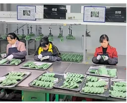
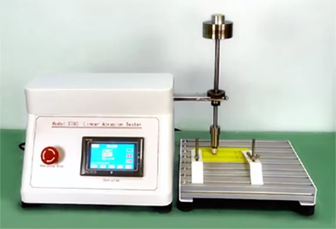
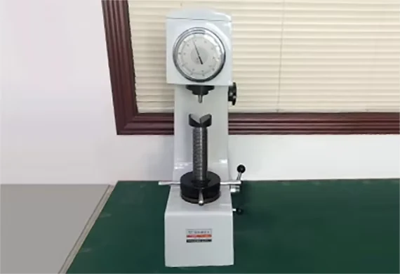
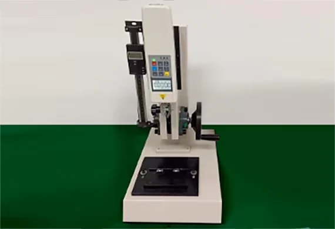
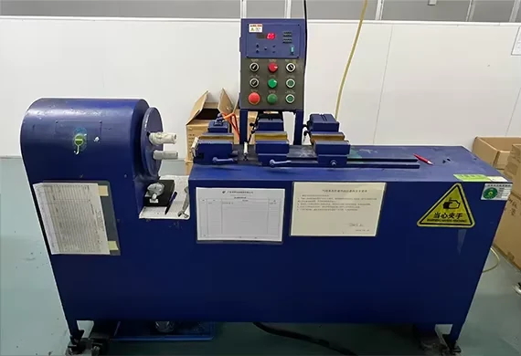
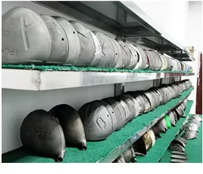

Incoming parts review
Check incoming components, approved materials and relevant identifiers.

QUALITY CONTROL · INSPECTION · VERIFICATION
A dedicated QC team, practical inspection equipment and project-specific checkpoints help verify agreed specifications before shipment.
OUR QUALITY APPROACH
Quality checkpoints are aligned to the approved model, specification and order details. Our QC team reviews incoming parts, in-process conditions, final assembly and shipment readiness according to the confirmed requirement.
Check incoming components, approved materials and relevant identifiers.
Review defined production checkpoints and identify visible deviations early.
Verify key dimensions, weight or angle-related requirements where applicable.
Review finish, coating, color, logo position and cosmetic condition.
Check assembly consistency and project-specific build requirements.
Confirm quantity, packing, labels and final shipment readiness.
INSPECTION EQUIPMENT
The following are company-provided photos from the QC environment. Where exact model names are not yet confirmed from equipment plates or manuals, we describe the equipment by inspection purpose rather than by unverified brand or model number.






Inspection scope depends on the product model and project requirement. Not every check applies to every item.
QUALITY CONTROL · INSPECTION IN PRACTICE
These company-provided references help explain how inspection may be organized around different checkpoints. The exact sampling method and checklist depend on the product category, approved specification and customer requirement.

These captions describe inspection context and purpose. They do not imply that every test applies to every golf product or order.
DOCUMENTATION & CONFORMITY
Available certificates, inspection records and test documents should always be reviewed by product model, facility scope, issuing body and validity period. Not every certificate or report applies to every model or market.
REQUEST QUALITY DOCUMENTS ↗QUALITY REQUIREMENTS ARE PROJECT-SPECIFIC